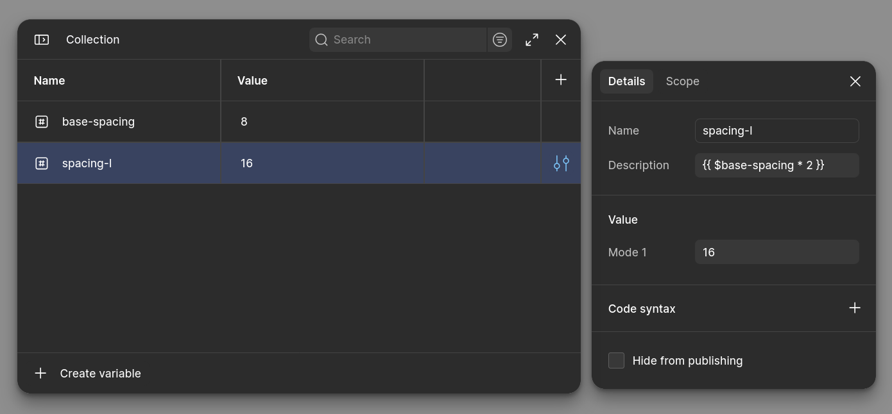
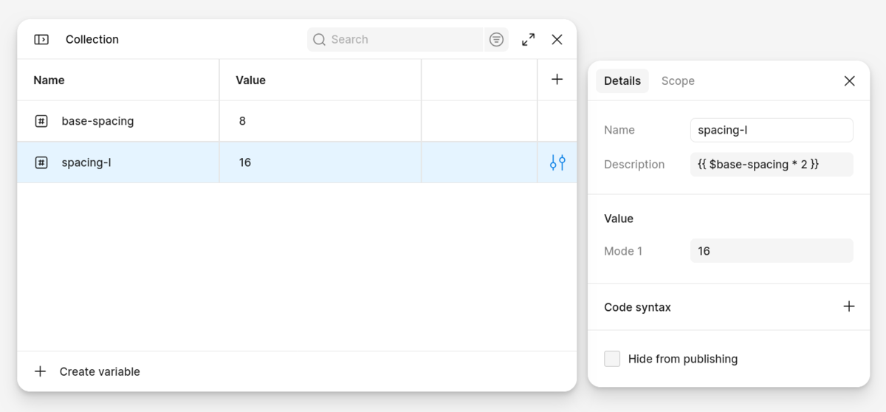
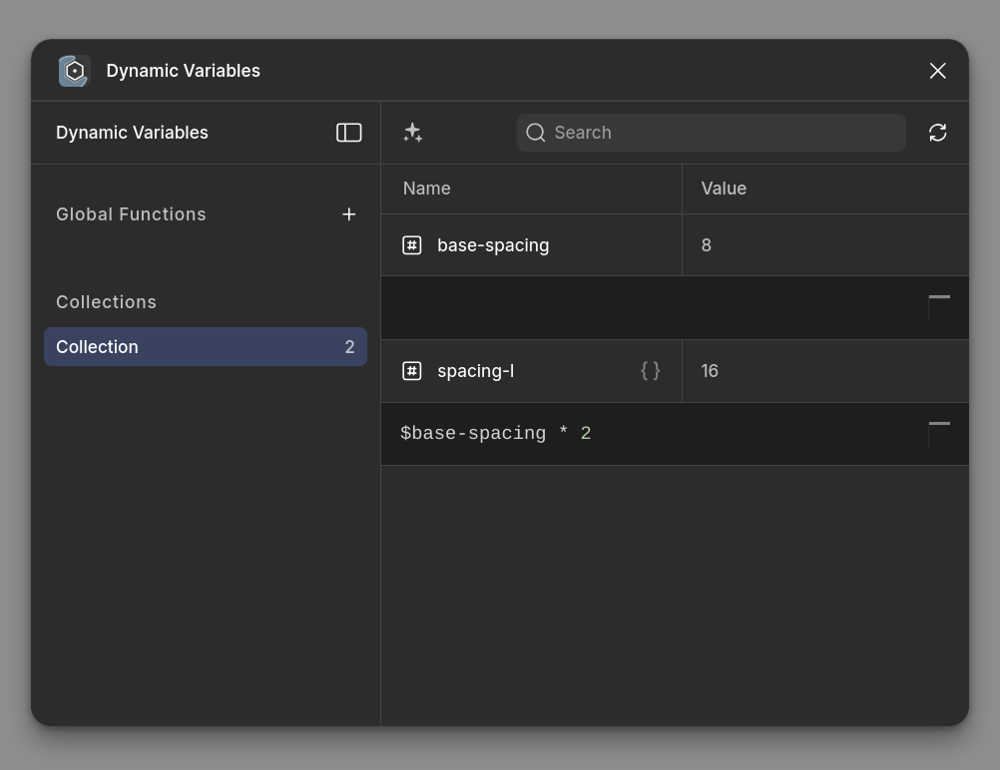
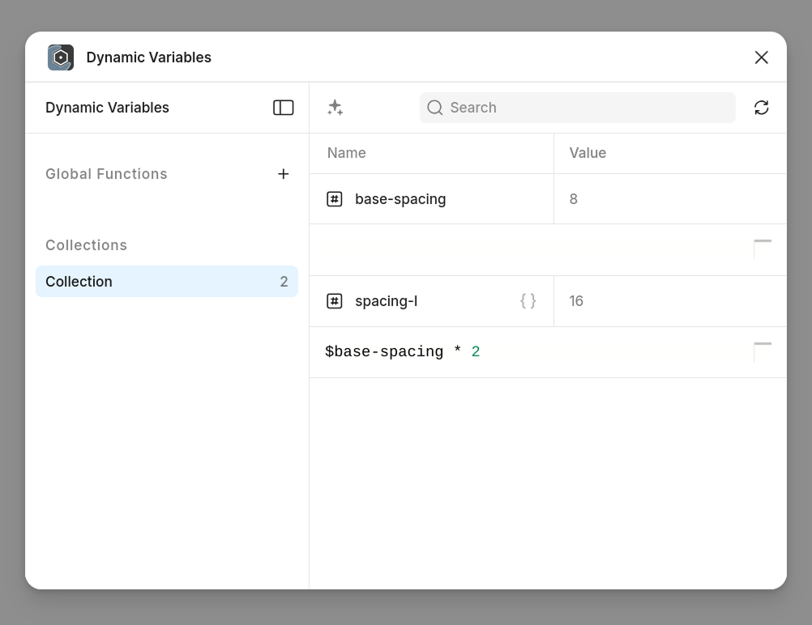
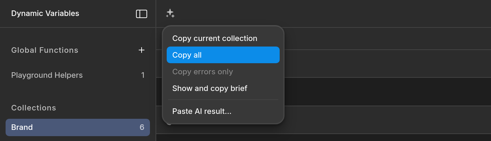
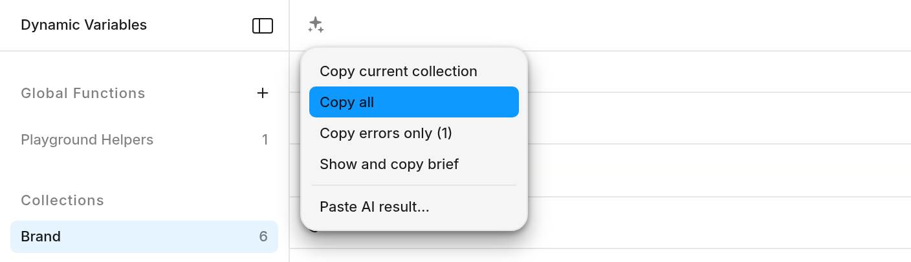
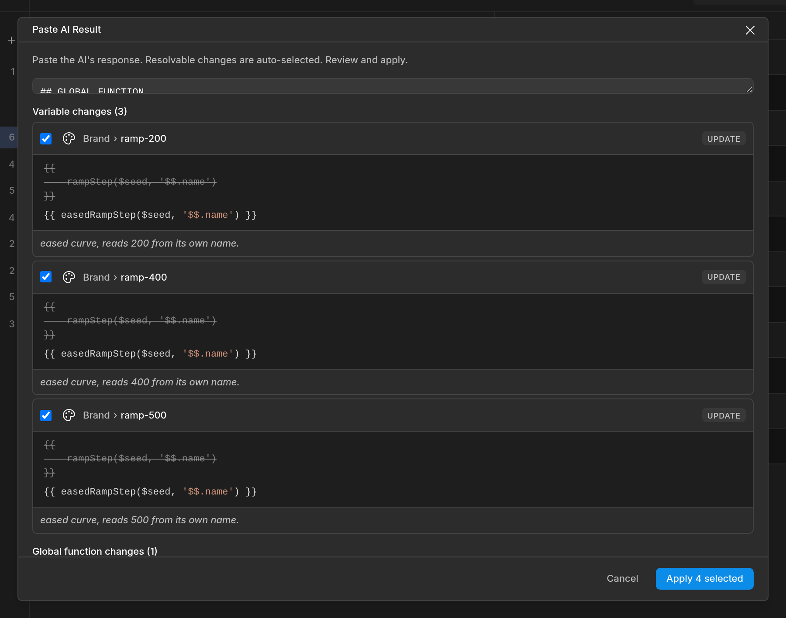
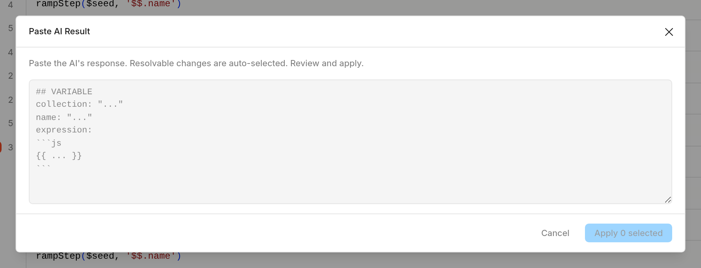
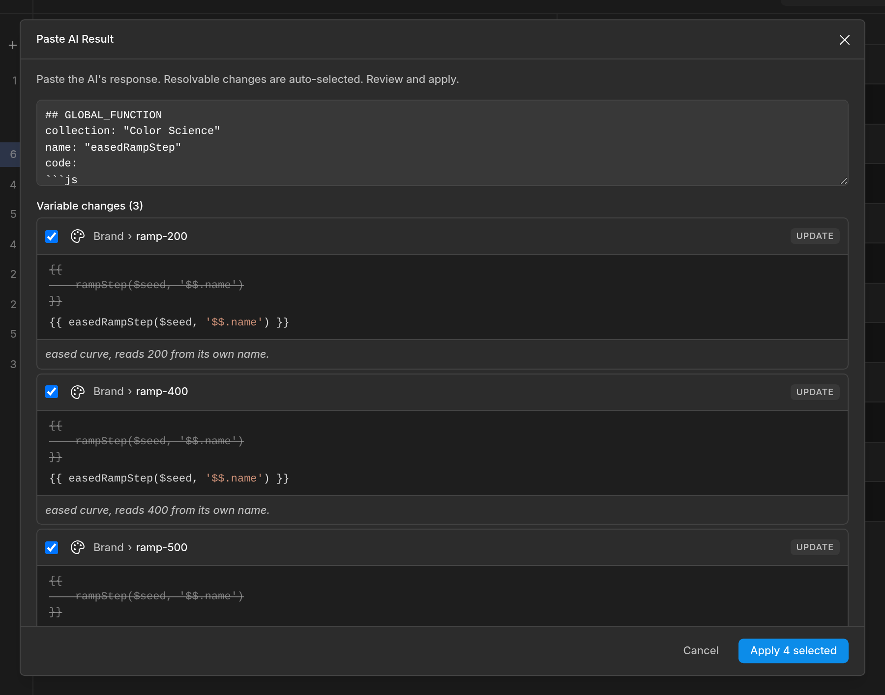
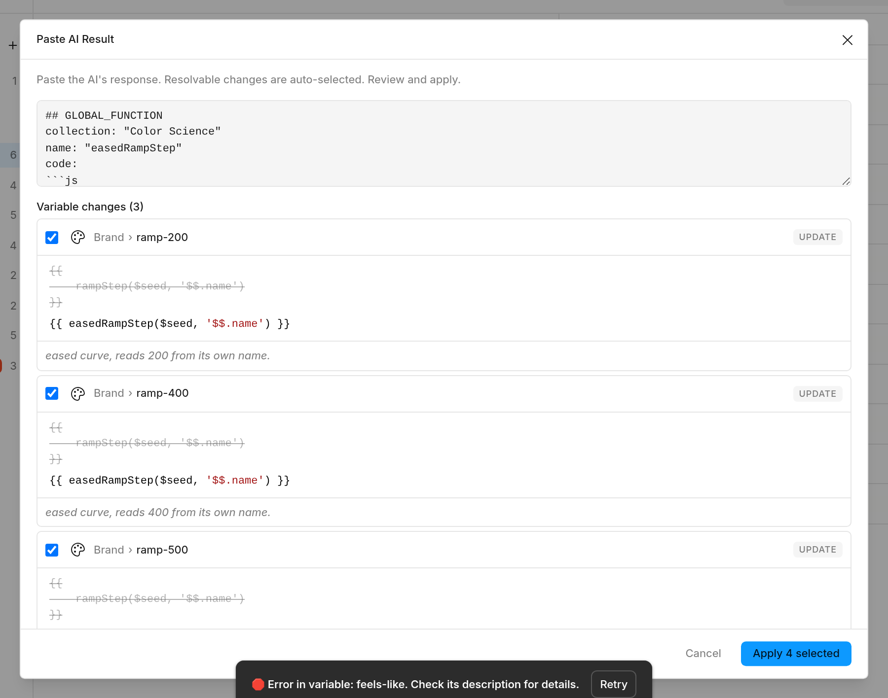

Dynamic Variables
Change one base variable — every dependent color, spacing and type value updates itself.
Write a small JavaScript formula in a variable's description; the plugin keeps its value in sync.
Try it — right here live
These tables are editable — and so are the expressions: every one is a live code editor that saves itself a second after you stop typing, just like in the plugin (the {{ }} wrapper stays hidden, also like in the plugin). Change the base color and watch the derived shades recompute — exactly what the plugin does to your real Figma variables on every update.
cd/cl libraries, same editor behavior — to give you the closest possible feel. It is not the plugin's engine, and edge cases may behave differently; the plugin is always the source of truth. Every example shown here is pinned as a test against the real engine in the plugin's repository, so what the docs claim is what the plugin computes.Start here — your first dynamic variable
- Write a formula in a description. Select a variable in Figma's variables panel, and in its description field write an expression between double curly braces, referencing another variable with
$:{{ $base-spacing * 2 }} - Run the plugin. PluginsDynamic VariablesUpdate Once (one shot) or Start Monitoring Changes (updates live as you edit; pause/resume and interval are in the menu).
- That's it. The variable's value is now computed. Edit
base-spacingand it follows. Rename a referenced variable — references fix themselves.
The {{ }} wrapper lives in the description field — that's what you see when editing descriptions directly (the only way in 1.x). The plugin's editor (and the playgrounds below) hides the wrapper by default and shows just the expression.


spacing-l computes from base-spacing.Prefer a real editor over description fields? Open PluginsDynamic VariablesOpen Dynamic Variables Editor: a tree of your collections with a full code editor (syntax highlighting, inline errors) — and the AI menu.


Recipes
Each recipe is live — poke the base values. These exact expressions are pinned as tests against the real engine, so they can't drift out of date.
1. Color ramp from one seed — with a Global Function
A brand ramp where every shade derives from seed. The OKLCH math lives in one Global Function; every step is a one-line call that passes its own name — readable, and adding ramp-300 later means adding a variable, not another copy of the formula. (Global Functions live in their own collection in the plugin — define once, call anywhere.)
2. Spacing scale with density modes
The base carries per-mode values (Compact / Default / Comfortable). Steps reference it relatively — $('./Base') means "my sibling named Base" — so the group can be renamed or duplicated wholesale and keeps working.
3. Type scale
Each heading builds on the previous one — reference the already-computed token instead of repeating the formula.
4. Accessible on-color
Text that picks black or white by actual contrast math, per mode. Flip the background to something dark and watch the text flip.
5. Dark mode, derived from light
Author the Light palette; Dark computes itself by inverting OKLCH lightness and damping chroma. One expression, both modes — $$().mode tells it where it's running.
6. Localization — languages as modes
Modes don't have to be Light/Dark — make them EN / DE / FR and compose copy that translates itself. String variables substitute as raw text, so build sentences inside a string literal: "$greeting, $user-name". One quirk worth knowing: punctuation glued to a reference gets read as part of the name ($user-name! ≠ $user-name) — keep it outside, + "!".
7. Live data — the weather in New York
Expressions can fetch. This pulls the current feels-like temperature in NYC from Open-Meteo (no API key) into a variable:
8. Motion variables (Timing & Easing) — select, don't compute
Figma's new Timing and Easing variable types are read-only for plugins: the Plugin API rejects every attempt to create one or write a value into one. The single exception — which this plugin turns into a feature — is that a motion variable may be aliased to another variable of the same type. So an expression on a Timing or Easing variable doesn't return a value; it returns the name of the variable it should follow:
// on Motion/duration (a TIMING variable):
{{ $reduced-motion ? "slow" : "fast" }} // same-collection names
// on Motion/active-curve (an EASING variable):
{{ $reduced-motion ? "Motion/Hold" : "Motion/Bouncy" }}
// the explicit spelling — alias() works on EVERY variable type:
{{ alias($use-brand-b ? "Theme/brand-b" : "Theme/brand-a") }} // e.g. on a COLORFlip the reduced-motion boolean and every animation bound to active-curve switches to Hold — an accessibility toggle for your whole motion system, or brand-level motion personalities from one driver. And since alias() writes a real Figma alias for any same-type pair, the same trick switches colors, numbers or strings by reference instead of copying values.
Reading motion variables works too — turn them into live handoff tokens with the easing helpers (cssEasing, easingName, bounce):
code/easing → {{ cssEasing($('Motion/active-curve')) }} // "cubic-bezier(0.42, 0, 0.58, 1)"
motion-label → {{ easingName($('Motion/active-curve')) }} // "Bouncy"
code/timing → {{ $('Motion/duration') + "ms" }} // Timing values are plain numbers⚠️ Use with care. Because raw writes are blocked, the plugin can re-point a motion variable but can never write its original value back — undoing an alias means re-picking the curve in Figma's own panel (or Cmd/Ctrl+Z right after). Keep your source curves in dedicated preset variables (like Hold and Bouncy above) and put expressions only on selector variables that were born to be aliases. If Figma later opens raw writes, computed values start working here by themselves — the plugin probes the API on every write.
🧳 Coming from Tokens Studio or another token pipeline? The recipes above are your parity bridge — and code MIGRATING at checkout acknowledges that switching takes work.
AI editing — describe it, don't code it 2.0
You don't have to write these formulas yourself. In the editor (Open Dynamic Variables Editor), the ✨ AI menu gives you a two-step loop that works with whatever assistant you already use — no API key, no extra subscription:
- Copy Brief for AI — puts a complete brief on your clipboard: your collections, variables, current values, and the full expression syntax. Paste it into ChatGPT, Claude, Gemini — then ask in plain words: "derive a 10-step ramp from brand/seed, and make button text pick black or white by contrast."
- Paste AI Result — paste the assistant's reply back. The plugin parses it and shows a preview of every proposed change — old valuenew expression, per variable — and nothing touches your file until you apply.






Reference
Referencing variables
| Write | Meaning |
|---|---|
$name | Same-collection variable (shorthand; fine when the name is simple) |
$('name') | Same-collection, call form — recommended: unambiguous for any name |
$('Collection/group/name') | Cross-collection. A variable's name is its full slash path — for a variable shown as spacing/Base, write $('spacing/Base'), not $('Base') |
$('./sibling') | Relative: same group. ./sub/name reaches into a subgroup |
$('../name') | Relative: one group up (repeat ../ to climb) |
A plain reference always resolves to the value for the current mode — in a Light/Dark collection, one expression automatically reads the same-mode value. Legacy raw forms like $Collection/name from 1.x still work; the quoted call form is recommended because it never gets misread inside larger expressions.
Variable metadata — $$()
$$() is the current variable's own metadata; $$('other') / $$('Coll/other') another variable's. Either way you get a plain object, so everything after it is ordinary JavaScript: $$().mode === 'Dark' ? … : …, $$('Brand/seed').values[0], `${$$().name}` in a template. Props: name, id, type, alias, collection, collectionId, mode, modeIndex, modeId, modes (array of mode names), values (array of the variable's values, ordered by mode). Names with slashes, spaces or dots all work, and the path may be computed — $$('ramp/' + i).name.
'$$.name', '$$.mode' === 'Dark' (quotes supplied by you). Existing expressions keep evaluating exactly as before; write new ones with $$().Engine rules worth knowing
- Multi-statement expressions: the value is the last statement —
{{ const t = …; Math.round(t) }}. A top-levelreturnis a syntax error (use an IIFE if you want one). - Computed reference paths resolve before the body runs: build them from literals and
$$()metadata only —$('ramp/' + $$().name.split('-')[1])✓; never from aconstyou declared in the same expression. - String values splice as raw text — use them inside string literals (
"$greeting, $user-name" + "!"), and keep punctuation out of the reference (the name matcher is greedy). - Async is fine: if the expression's value is a Promise (e.g. a
fetchchain), the plugin awaits it. - Colors can be returned as hex strings,
rgb()/hsl()strings, colord instances, or Figma{r,g,b,a}objects — the plugin coerces. Bare CSS names need a parser:rgba("green")orcd("green"). - Disable one expression without deleting it: comment the braces —
//{{ … }}.
Libraries in scope
| Shorthand | What | Example |
|---|---|---|
cd | colord — chainable color ops (Figma-color aware) | cd($brand).darken(0.1).toHex() |
cl | culori — color science. Functions, not methods: cl.oklch(c), cl.formatHex(c), cl.wcagLuminance(c); results are plain objects | cl.formatHex(cl.rgb({mode:'oklch',l:.7,c:.15,h:250})) |
cv | culori.converter() — parse/convert any CSS color (or a Figma color object) to RGB | cl.clampRgb(cv("oklch(90% 0.4 135)")) |
rgba | Figma-style CSS color parser{r,g,b,a} | rgba("green") |
fn | Number/date formatting (Intl) | fn($price, "en-US", {style:"currency", currency:"USD"}) |
cdRandom, cdGetFormat | colord extras | cdRandom().toHex() |
alias | Alias this variable to another same-type variable (a real Figma alias — and the only valid write for Timing/Easing) | alias($dark ? "Theme/night" : "Theme/day") |
cssEasing | Easing value → CSS string (cubic-bezier(…), linear, steps(1, end), spring(bounce)) | cssEasing($('Motion/curve')) |
easingName | Easing value → Figma's own label | easingName($('Motion/curve')) → "Bouncy" |
bounce | Easing spring value → normalized bounce (0..1) | bounce($('Motion/spring')) → 0.99 |
Global Functions
Repeated logic across many expressions? Create a Global Functions collection in the editor and define plain JavaScript helpers once — like rampStep() in the ramp recipe above — then call them from any expression: {{ rampStep($seed, $$().name) }}. Two things to remember: helper code is plain JS (no $ references inside it — pass values in as arguments), and the cd/cl libraries are available inside helpers.
Run modes, errors, housekeeping
- Start Monitoring Changes — re-evaluates on your interval (configurable), pause/resume from the menu. Update Once — single pass, full control.
- Errors are per-variable, per-mode: cyclic dependencies, unresolved references and type mismatches are reported with the variable name — in the editor they appear inline.
- Renames are safe: the plugin tracks references and rewrites them when variables are renamed or moved.
- Library variables: bring team-library variables in as aliases and use them in expressions.
FAQ
Why isn't my cross-collection reference resolving?
A variable's name is its full slash path. For spacing/Base inside collection Primitives, write $('Primitives/spacing/Base') from another collection, $('spacing/Base') from the same one, or $('./Base') from a sibling.
My variable names have spaces or emoji.
Use the call form: $('🎨 Brand Primary'). The $name shorthand only works for simple names.
Can I do HSB / LCH / OKLCH?
Yes — culori (cl, cv) handles every CSS color space including OKLCH, plus gamut clamping (cl.clampRgb) so out-of-range results stay displayable.
Numbers show too many decimals.Math.round(x), x.toFixed(2), or locale-aware fn(x, "en-US").
Can an expression react to the mode it's in?
Yes: {{ $$().mode === 'Dark' ? … : … }} — though often you don't need it: plain references already resolve per-mode.
Does it work with team library variables?
Yes, via aliases: bring a library variable into a local collection as an alias, then reference it like any local variable.
Can I use window / document / import npm packages?
No — expressions run in Figma's plugin sandbox. You get standard JavaScript, fetch, and the bundled color/format libraries; shared helpers go in Global Functions.
Will the plugin change variables I didn't write expressions for?
No. Only variables whose description contains {{ }} are touched — and AI-proposed changes always go through the preview first.
Free & Pro
Everything is free for up to 5 dynamic variables, forever. A full-featured trial (7 or 14 days depending on variant) has no cap. Pro removes the limit and funds development — activate via Dynamic VariablesPro LicenseActivate Key (5 devices, 10 on Unlimited; write me for activation resets).
IREADTHEDOCS at checkout (pre-applied via this link)
for a reader's discount on Pro. Thanks for caring about the details — you're
exactly who this plugin is for.